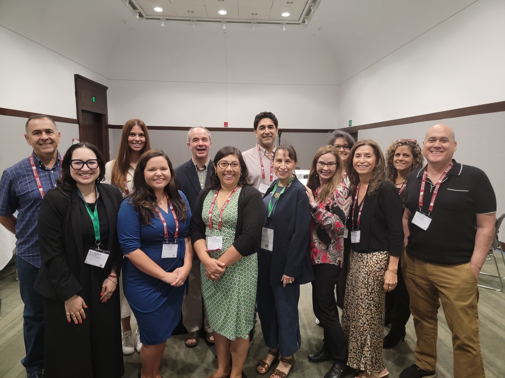
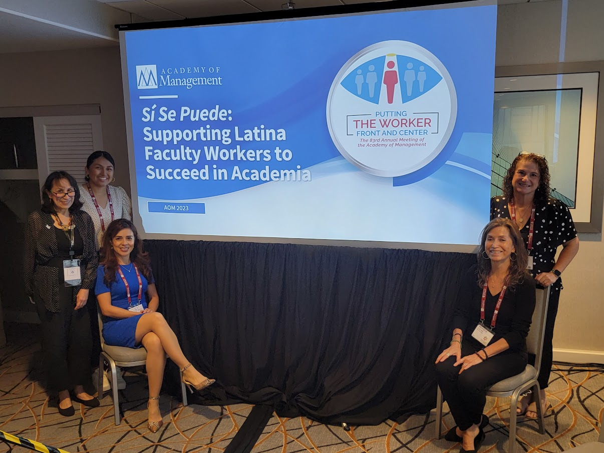
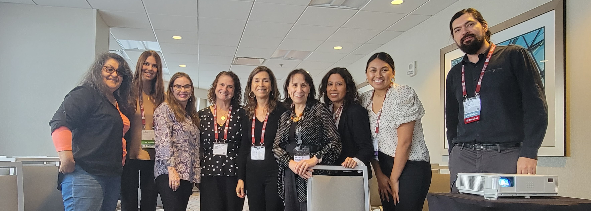

A COMMUNITY OF SCHOLARS
We Are Here (Estamos Aquí)
We are thrilled to announce that the LaFamilia Special Issue of Equality, Diversity, and Inclusion: An International Journal, titled We Are Here (Estamos Aquí): Researching the Latinx Work Experience in the United States, is officially in press and published this June! This Special Issue features five outstanding papers exploring diverse facets of the Latino experience in the workplace.
By Carolina B. Gomez, Carlos B. Gonzalez, Monica C. Gavino, Bernardo M. Ferdman, and Patricia G. Martinez
This foundational article introduces the Latino Diversity Model, examining intersectional dimensions of Latinidad and their significance for organizational research.
By Stephanie Black, Laura Guerrero, and Donna Maria Blancero
Using the JD-R model, this paper explores workplace dynamics for Hispanic workers, highlighting increased discrimination, cultural values like collectivism and familism, and heightened family demands for Latinas.
By Mabel Sanchez
Through pláticas, this qualitative study amplifies Latino farmworkers’ experiences, emphasizing workplace dignity.
By Angelica Gutierrez
This viewpoint distinguishes impostor syndrome from impostorization, arguing that organizational practices trigger these feelings and calling for systemic change.
By Samantha E. Erskine, Robert Bonner, and Verónica Caridad Rabelo
Drawing from interviews with Latina CEOs, this paper reveals the systemic challenges they face and the resilient strategies they employ to lead and thrive.
LaFamilia of Management Scholars will be a vibrant community of academics nationally recognized for providing mentorship and professional development opportunities for Latinx faculty and doctoral students. We aim to lead and inspire undergraduate and graduate students to thrive and become role models by pursuing academic careers.
LaFamilia of Management Scholars connects Latinx faculty, doctoral students, and allies to collaborate on research, teaching and student success within a U.S. context, by nurturing and providing support through culturally relevant mentorship programs and professional development opportunities.
Nuestros Pilares del Éxito
Bring commitment to Hispanic Excellence into the classroom by serving as role models, sharing our stories, inspiring students, and providing career advice and coaching.
Recent moments from our familia

"Putting the Latinx Worker Front and Center"

"Supporting Latina Faculty Workers to Succeed in Academia"

Academy of Management Conference 2023
Note: We acknowledge the evolution of language and terms used to refer to Hispanic, Latino, Latina, Latine, and Iberoamerican peoples. We currently use "Latinx" to include as many familiares as possible.